# REST Introduction & HTTP This material is part of the [Géoinformatique opérationnelle : Développement avancé d’outils](https://github.com/Tazaf/heig-mdt-gio1) for the [Master of Science HES-SO en Développement Territoriel](https://master.hes-so.ch/domaines/ia/mdt). Learn the core architectural principles of REST and how they can be applied to make RESTful web APIs with HTTP and URLs. **You will need** * [Google Chrome][chrome] (recommended, any browser with developer tools will do) * [Postman][postman] --- ## What is a Web Service? .breadcrumbs[<a href="#1">REST Introduction & HTTP</a>] <p class='center'></p> **Clients** need access to **data** and **logic**. How can they find it, retrieve it, and know which logic to invoke? --- class: center, middle ## Big web services .breadcrumbs[<a href="#1">REST Introduction & HTTP</a>] --- ### Remote procedure call (RPC) or remote method invocation (RMI) .breadcrumbs[<a href="#1">REST Introduction & HTTP</a> > <a href="#3">Big web services</a>] An RPC allows a client to call a procedure/function without realizing that it actually runs on a server. RMI is the object-oriented equivalent. <p class='center'>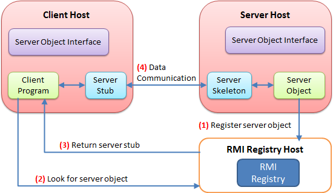</p> --- ### Web services standards .breadcrumbs[<a href="#1">REST Introduction & HTTP</a> > <a href="#3">Big web services</a>] <p class='center'><img src='images/web-services-standards-overview.gif' width='90%' /></p> --- ### Pros & cons .breadcrumbs[<a href="#1">REST Introduction & HTTP</a> > <a href="#3">Big web services</a>] Many standards: * Simple Object Access Protocol (SOAP) * Web Services Description Language (WSDL) .grid-50[ **Benefits:** * Very rich protocol stack: * support for security * transactions * reliable transfer ] .grid-50[ **Problems:** * Very rich protocol stack: * complexity * verbosity * incompatibility issues * theoretical human readability ] --- class: center, middle ## REST .breadcrumbs[<a href="#1">REST Introduction & HTTP</a>] *A simple solution* <!-- --> <!-- *A cat RESTing...* --> --- ### What is REST? .breadcrumbs[<a href="#1">REST Introduction & HTTP</a> > <a href="#7">REST</a>] REST means [REpresentational State Transfer][rest]. It is a set of principles that describe how networked resources are to be shared. Many services on the World Wide Web use this approach. > REST has been introduced in [Roy Fielding’s Ph.D. thesis][roy-fielding-thesis] > (Roy Fielding has been a contributor to the HTTP specification, and to the > Apache server and community). An API or web service that follows REST's architectural constraints is said to be **RESTful**. --- ### REST architectural constraints .breadcrumbs[<a href="#1">REST Introduction & HTTP</a> > <a href="#7">REST</a>] A system is considered to follow the REST architecture if it follows [these constraints][rest-constraints]: * **Client-server architecture:** separation of concerns between UI and storage. * **Statelessness:** the server stores no state; the client does, if necessary. * **Cacheability:** deterministic responses can be cached for performance. * **Layered system:** there can be intermediaries between the client and server, each unaware of the others. * **Uniform interface:** all client-server communication is standardized. --- #### Client-server architecture .breadcrumbs[<a href="#1">REST Introduction & HTTP</a> > <a href="#7">REST</a> > <a href="#9">REST architectural constraints</a>] There must be a **strict separation of concerns** between client and server. - The **client** is responsible for the user interface and user state. - The **server** is responsible for the storage and business logic. The benefits of this principle are: - **Portability**: the client can be a web browser, a mobile app, a desktop app, etc. - **Evolution**: the client and server can be maintained, updated, and replaced independently. --- #### Statelessness .breadcrumbs[<a href="#1">REST Introduction & HTTP</a> > <a href="#7">REST</a> > <a href="#9">REST architectural constraints</a>] The server must not store any client state between requests. This implies that - Any state must be **stored on the client**, - All necessary state must be **sent with each request**. The benefits of this principle are: - **Simplicity**: the server doesn't have to manage client state. - **Scalability**: the server can handle more clients at a time without consuming too much memory. - **Caching**: responses can be cached more easily, when deterministic. - **Load balancing**: requests can be served from any server in a pool. And many more (easier debugging, security, reliability) --- #### Cacheability .breadcrumbs[<a href="#1">REST Introduction & HTTP</a> > <a href="#7">REST</a> > <a href="#9">REST architectural constraints</a>] Whether a response can be cached or not **must be indicated** by the server in the response headers. - If the response depends only on the request, it can be cached. - If the response depends on randomness, time, or other changing factors, it cannot be cached. The caching can then be done by the client, by an intermediary, or by the server itself. The benefits of this principle are: - **Performance**: responses can be served from a cache, reducing the load on the server. - **Scalability**: the server can handle more clients at a time without consuming too much computing power. --- #### Layered system .breadcrumbs[<a href="#1">REST Introduction & HTTP</a> > <a href="#7">REST</a> > <a href="#9">REST architectural constraints</a>] The architecture between the client and the server can be **composed of multiple layers**. For example, the first layer could be a load balancer, the second layer could be a cache, and the third layer could be the server. It is important that - This structure is **transparent** to the client, i.e. the client cannot tell whether it is connected to the server or to an intermediary. - Each layer can only see its **immediately adjacent layers**, and not the whole stack. The benefits of this principle are: - **Separation of concerns**: each layer can focus on its own task. - and all benefits of SoC (easier maintenance, easier evolution, etc.) --- #### Uniform interface .breadcrumbs[<a href="#1">REST Introduction & HTTP</a> > <a href="#7">REST</a> > <a href="#9">REST architectural constraints</a>] The interface between the client and the server must be **uniform**, i.e. independent of the resources, the type of client, the app, etc. Essentially, the way the client and server communicate must be the same for all types of applications. This is achieved through uniformity in: - **URLs** to identify resources. - **Media types** to describe the *kind* of resource. - **HTTP methods** to describe the *action* to perform on a resource. - **HTTP status codes** to describe the result of the action. - **Hypermedia** (i.e. links) to describe the available actions and resources ([HATEOAS][hateoas]). The benefits of this principle are: - **Uniformity**: you don't have to learn a new API for each new service. - and all benefits of uniformity (easier maintenance, easier evolution, etc.) --- #### So... what is REST? .breadcrumbs[<a href="#1">REST Introduction & HTTP</a> > <a href="#7">REST</a> > <a href="#9">REST architectural constraints</a>] In practice, a RESTful web service is a **client-agnostic state machine**. The state of the application consists of - **resources** (e.g. users, photos, comments, etc.) - identified by a **URL**, described by **media type** (JSON, XML, etc.) - **client-specific state** (e.g. language, session, etc.) stored on the client. The client can transition between states through [HATEOAS][hateoas] - Available transitions are described by the **hyperlinks** present in the current resource. - Transitions are described by **HTTP methods** (GET, POST, etc.) > Note that REST does not mandate the use of HTTP and URLs, but it is the > simplest and most popular way of implementing a RESTful web service. --- ### What is a web resource? .breadcrumbs[<a href="#1">REST Introduction & HTTP</a> > <a href="#7">REST</a>] Something that can be uniquely identified on the web: **Static content** * An article published in the "24 heures" newspaper * A person's birth certificate **Dynamic content** * The collection of articles published in the sport section of the newspaper * The list of grades of the student Jean Dupont * Any volatile, **intangible thing** (e.g. the current price of Nestlé stock) * Any connected **physical object** (e.g. a vending machine in the school hallway) --- ### [Uniform Resource Locator (URL)][url] .breadcrumbs[<a href="#1">REST Introduction & HTTP</a> > <a href="#7">REST</a>] The way we **uniquely identify** a resource on the web. > "A reference to a **web resource** that specifies its **location** on a computer network and a **mechanism** for retrieving it." * http://www.24heures.ch/vaud/2008/08/04/trente-etudiants-manifestent * http://imdb.com/movies/best?page=3&pageSize=50&orderBy=title * http://www.smart-machines.ch/customers/heig/machines/8272#order The syntax of an URL is: ``` scheme:[//[user:password@]host[:port]][/]path[?query][#fragment] ``` --- ### Resource vs. representation .breadcrumbs[<a href="#1">REST Introduction & HTTP</a> > <a href="#7">REST</a>] In a REST API, we use the HTTP protocol to support the exchange of data (or **state transfer**) between a **client** and a **server** What is exchanged is not the actual resource: it is a **representation** of the resource The **same resource** could have: * An HTML representation * An XML representation * A PNG representation * A WAV representation The client can specify the specific representation in wants in its request. --- class: center, middle ## HyperText Transfer Protocol (HTTP) .breadcrumbs[<a href="#1">REST Introduction & HTTP</a>] > "An [application protocol][osi-application] for distributed, collaborative, > and [hypermedia][hypermedia] information systems. [HTTP][http] is the > foundation of data communication for the World Wide Web." --- ### Evolution of HTTP .breadcrumbs[<a href="#1">REST Introduction & HTTP</a> > <a href="#19">HyperText Transfer Protocol (HTTP)</a>] * [HTTP/1.0][http] (1996) - [RFC 1945][http10-rfc] * HTTP/1.1 (1999) - [RFC 2616][http11-rfc] * [HTTP/2.0][http2] (2015) - [RFC 7540][http2-rfc] > HTTP/2 is a more efficient expression of HTTP's semantics "on the wire", > which **maintains high-level compatibility with HTTP/1.1** (for example with > methods, status codes, URIs, and most header fields). It is now supported by > virtually all web browsers and major web servers. * [HTTP/3.0][http3] (2022) - [RFC 9144][http3-rfc] > HTTP/3 is the proposed successor to HTTP/2, which is already in use on the > web, using [UDP][udp] instead of [TCP][tcp] for the underlying transport > protocol. **Like HTTP/2, it remains compatible with previous major versions of the > protocol.** Support for HTTP/3 was added to Cloudflare and Google Chrome in > September 2019, and can be enabled in the stable versions of Chrome and > Firefox. --- ### HTTP is a request-response protocol .breadcrumbs[<a href="#1">REST Introduction & HTTP</a> > <a href="#19">HyperText Transfer Protocol (HTTP)</a>] When you visit the following page: `https://en.wikipedia.org/wiki/Film` Your browser makes an HTTP **request**... ```http GET /wiki/Film HTTP/1.1 Accept: text/html,*/* Host: en.wikipedia.org ``` ...and gets a **response**: ```http HTTP/1.1 200 OK Content-Length: 58330 Content-Type: text/html; charset=UTF-8 <!DOCTYPE html> <html lang="en"> <head> <meta charset="UTF-8"/> <title>Film - Wikipedia</title> </head> <body> ... </body> </html> ``` --- ### Anatomy of an HTTP request .breadcrumbs[<a href="#1">REST Introduction & HTTP</a> > <a href="#19">HyperText Transfer Protocol (HTTP)</a>] Get the third page of a movies list: ```http GET /movies/best?page=3&pageSize=50&orderBy=title HTTP/1.1 Accept: text/html,*/* Host: www.example.com ``` Register a new movie: ```http POST /api/movies HTTP/1.1 Content-Type: application/json Host: www.example.com { "name": "The Matrix", "releaseYear": 1999 } ``` --- #### Request method .breadcrumbs[<a href="#1">REST Introduction & HTTP</a> > <a href="#19">HyperText Transfer Protocol (HTTP)</a> > <a href="#22">Anatomy of an HTTP request</a>] The first line of an HTTP request is the **request line**: ``` `GET` /movies/best?page=3&pageSize=50&orderBy=title HTTP/1.1 ``` The **request method** describes *what action* to perform on the resource. | Method | Purpose | | :--- | :--- | | GET | Retrieve data | | POST | Create a new resource | | PUT | Replace an existing resource | | PATCH | Partially modify an existing resource | | DELETE | Delete a resource | There are [more methods][http-methods]. --- #### Resource path .breadcrumbs[<a href="#1">REST Introduction & HTTP</a> > <a href="#19">HyperText Transfer Protocol (HTTP)</a> > <a href="#22">Anatomy of an HTTP request</a>] The second part of the request line is the **resource path**: ``` GET `/movies/best`?page=3&pageSize=50&orderBy=title HTTP/1.1 ``` It tells the server where to find the resource to perform the action on. --- #### Query string .breadcrumbs[<a href="#1">REST Introduction & HTTP</a> > <a href="#19">HyperText Transfer Protocol (HTTP)</a> > <a href="#22">Anatomy of an HTTP request</a>] The **query string** is the third part of the request line: ``` GET /movies/best`?page=3&pageSize=50&orderBy=title` HTTP/1.1 ``` These are parameters given to the server, usually to *filter* the resource. In this case: * `page=3` - we want the third page * `pageSize=50` - we want pages of 50 movies * `orderBy=title` - we want the movies ordered by title --- #### Headers .breadcrumbs[<a href="#1">REST Introduction & HTTP</a> > <a href="#19">HyperText Transfer Protocol (HTTP)</a> > <a href="#22">Anatomy of an HTTP request</a>] After the request line, an HTTP request has one or more **headers**: ```http GET /movies/best?page=3&pageSize=50&orderBy=title HTTP/1.1 *Accept: application/html,*/* *Host: www.example.com ``` This allows the client to tell the server how to serve the request: * `Accept: application/html,*/*` - I prefer HTML, but otherwise give me any format you have * `Host: www.example.com` - This is the domain I want the resource from There are many [headers][headers] that can be used in requests. --- #### Request body .breadcrumbs[<a href="#1">REST Introduction & HTTP</a> > <a href="#19">HyperText Transfer Protocol (HTTP)</a> > <a href="#22">Anatomy of an HTTP request</a>] The **body** is data that the client can ask the server to do something with: ```http POST /api/movies HTTP/1.1 Content-Type: application/json Host: www.example.com *{ * "name": "The Matrix", * "releaseYear": 1999 *} ``` In this case: * It's a `POST` request, so the server should create a new resource * The `Content-Type` header is `application/json`, so the server should interepret the body as a JSON payload and use that data to create the resource --- ### Anatomy of an HTTP response .breadcrumbs[<a href="#1">REST Introduction & HTTP</a> > <a href="#19">HyperText Transfer Protocol (HTTP)</a>] An HTML page: ```http HTTP/1.1 200 OK Content-Type: text/html; charset=UTF-8 <!DOCTYPE html> <html lang="en"> <head><title>Film - Wikipedia</title></head> <body>...</body> </html> ``` A resource we just created: ```http HTTP/1.1 201 Created Content-Type: application/json Location: https://example.com/api/movies/xo349 { "id": "xo349", "createdAt": "2017-02-08T11:05:40+01:00", "name": "The Matrix", "releaseYear": 1999 } ``` --- #### Status code and reason phrase .breadcrumbs[<a href="#1">REST Introduction & HTTP</a> > <a href="#19">HyperText Transfer Protocol (HTTP)</a> > <a href="#28">Anatomy of an HTTP response</a>] The first line of an HTTP response is the **status line**: ``` HTTP/1.1 `201 Created` ``` The **status code** and the **reason phrase** indicate to the client whether the request was successful and how to handle it: | Code | Reason | Purpose | | :--- | :--- | :--- | | 200 | OK | The response body contains the requested resource. | | 201 | Created | The `Location` header contains the URL of the created resource; the response body may contain a representation of the created resource. | | 401 | Unauthorized | Authentication is required and was not provided or is invalid. | | 422 | Unprocessable Entity | The request body is semantically invalid. | | 404 | Not Found | The requested resource does not exist. | There are many [status codes][http-status-codes] a server can use to help the client handle responses. --- #### Headers .breadcrumbs[<a href="#1">REST Introduction & HTTP</a> > <a href="#19">HyperText Transfer Protocol (HTTP)</a> > <a href="#28">Anatomy of an HTTP response</a>] Like requests, an HTTP response has one or more **headers** after the status line: ```http HTTP/1.1 200 OK *Content-Language: en *Content-Type: application/json *Last-Modified: Tue, 07 Feb 2017 02:12:22 GMT { "id": "xo349", "name": "The Matrix", "releaseYear": 1999 } ``` It allows the server to give the client additional metadata about the response: * `Content-Language: en` - The response contains information in English * `Content-Type: application/json` - The response body is a JSON payload * `Last-Modified: Tue, 07 Feb 2017 02:12:22 GMT` - The resource was last modified on February 7th There are many [headers][headers] that can be used in responses. --- #### Response body .breadcrumbs[<a href="#1">REST Introduction & HTTP</a> > <a href="#19">HyperText Transfer Protocol (HTTP)</a> > <a href="#28">Anatomy of an HTTP response</a>] The response body is the (optional) data sent by the server. Its nature depends on what the request was and what the response status code indicates. It could be the requested resource for a `GET` request: ```http HTTP/1.1 200 OK Content-Language: en Content-Type: application/json *{ * "id": "xo349", * "name": "The Matrix", * "releaseYear": 1999 *} ``` Or it could be a list of errors if the body of a `POST` request was invalid: ```http HTTP/1.1 422 Unprocessable Entity Content-Type: application/json *[ * { "field": "name", "message": "Name is required" }, * { "field": "releaseYear", "message": "Release year must be >= 1890" } *] ``` --- ### HTTP provides the [content negotiation][http-content-negotiation] mechanisms .breadcrumbs[<a href="#1">REST Introduction & HTTP</a> > <a href="#19">HyperText Transfer Protocol (HTTP)</a>] Different **representations** of a resource can be exchanged at the **same URL**: .grid-50[ A JSON representation: ```http GET /shows/game-of-thrones HTTP/1.1 *Accept: application/json ``` ```http HTTP/1.1 200 OK *Content-Type: application/json { "title": "Game of Thrones", "releaseYear": 2011, "seasons": 6, "episodes": 60 } ``` ] .grid-50[ An HTML representation: ```http GET /shows/game-of-thrones HTTP/1.1 *Accept: text/html,*/* ``` ```http HTTP/1.1 200 OK *Content-Type: text/html <html> <head> <title>Game of Thrones</title> </head> <body> <h1>Game of Thrones</h1> <p>A 2011 TV show.</p> <ul> <li>6 seasons</li> <li>60 episodes</li> </ul> </body> </html> ``` ] --- class: center, middle ## But can't I just use GET and POST? .breadcrumbs[<a href="#1">REST Introduction & HTTP</a>] I'm lazy that way. --- ### Standards .breadcrumbs[<a href="#1">REST Introduction & HTTP</a> > <a href="#33">But can't I just use GET and POST?</a>] A lot of smart people have encountered **the same problems you have** over the years. They have come together and defined **standard solutions** to deal with some of those problems. HTTP has a **very rich** vocabulary of *methods*, *headers* and *status codes* that are here to **help you** implement rich client-server interaction. .center[ > [Standards.REST][rest-standards] > > A collection of standards and specifications, that help make fantastic > HTTP/REST APIs. Don't reinvent the wheel, use fantastic wheels, hashed out by > experts, that solve problems you hadn't even considered yet. ] --- ### Common [methods][http-methods] .breadcrumbs[<a href="#1">REST Introduction & HTTP</a> > <a href="#33">But can't I just use GET and POST?</a>] | Method | Purpose | | :--- | :--- | | `GET` | Retrieve data | | `HEAD` | Retrieve the response headers but no data (to save bandwidth) | | `POST` | Create a new resource | | `PUT` | Replace an existing resource | | `PATCH` | Partially modify an existing resource | | `DELETE` | Delete a resource | | `OPTIONS` | Ask the server what you can do with a resource | --- class: compact-table ### Common request [headers][http-request-headers] .breadcrumbs[<a href="#1">REST Introduction & HTTP</a> > <a href="#33">But can't I just use GET and POST?</a>] Example | What the client is asking :--- | :--- `Accept: text/plain` | I want you to send me a response in **plain text**. If you **can't**, I expect you to respond with `406 Not Acceptable` `Authorization: Basic 98aw=` | Use the base64-encoded `user:password` string I am giving you as proof of my identity `Authorization: Bearer 1y09` | Use the [bearer token][auth0-tokens] I am giving you as proof of my identity `Content-Type: application/json` | I am sending you a request with JSON text in the body `If-Modified-Since: Sun, 3 Jan 2017` | If the resource I am retrieving has **not changed** since January 3rd 2017, I expect you to respond with `304 Not Modified` and no response body (to save bandwidth). ([Conditional GET][http-conditional-requests]) `If-Unmodified-Since: ...` | If the resource I am updating has **changed**, I expect you to **not update it** and respond with `412 Precondition Failed` ([Conditional update][http-conditional-requests]) `Referer: google.com` | I am coming to you from `google.com` `User-Agent: Mobile Safari/534.30` | I am sending you a request from a **mobile device** --- class: compact-table ### Common response [headers][http-response-headers] .breadcrumbs[<a href="#1">REST Introduction & HTTP</a> > <a href="#33">But can't I just use GET and POST?</a>] Example | What the server is telling you :--- | :--- `Access-Control-Allow-Origin: *` | I am allowing you to make a [cross-origin request][http-cors] from anywhere `Set-Cookie: UserID=JohnDoe` | I am giving you a cookie: please send it back to me for all further requests on this domain `Content-Type: text/html` | I am sending you an HTML page `Expires: Sun, 31 Dec 2017` | The content I am sending you will not change until December 31st 2017 `Last-Modified: Sun, 3 Jan 2017` | The content I am sending you was last modified on January 3rd 2017 `Location: http://example.com/somewhere` | The resource you requested has moved and I am telling you where, **or** the resource you just created is available at that address `WWW-Authenticate: Basic` | I do not know you, please re-send your request with [Basic HTTP authentication][http-auth] --- class: compact-table ### Common successful response [status codes][http-status-codes] .breadcrumbs[<a href="#1">REST Introduction & HTTP</a> > <a href="#33">But can't I just use GET and POST?</a>] Code | What the server is telling you :--- | :--- `200 OK` | Your request was successful `201 Created` | I have created a **new resource** and am telling you where it is in the `Location` header `202 Accepted` | I have received your request but will process it later `204 No Content` | I have processed your request but have no content to send you `301 Moved Permanently` | The resource you are requesting has **moved permanently** and I am telling you where in the `Location` header `302 Found` | The resource you are requesting has **moved temporarily** and I am telling you where in the `Location` header `304 Not Modified` | The resource you are requesting has **not changed**, so I am not sending you its data again --- class: compact-table ### Common client error response [status codes][http-status-codes] .breadcrumbs[<a href="#1">REST Introduction & HTTP</a> > <a href="#33">But can't I just use GET and POST?</a>] Code | What the server is telling you :--- | :--- `400 Bad Request` | I cannot understand the request (e.g. invalid JSON) `401 Unauthorized` | I do not know you, please [authenticate][http-auth] `403 Forbidden` | I know you, but you do not have sufficient access rights to do that `404 Not Found` | The resource you are requesting does not exist `405 Method Not Allowed` | You can't make a `GET/POST/...` on this resource `406 Not Acceptable` | I can't answer in the format you asked for in the `Accept` header `409 Conflict` | Your request is not consistent with the resource's state `412 Precondition Failed` | I am denying your [conditional request][http-conditional-requests] `415 Unsupported Media Type` | You are sending me XML/JSON/... but the resource cannot be represented in that format `418 I'm a teapot` | [I don't make coffee][http-teapot] `422 Unprocessable Entity` | The request body is syntactically correct but semantically invalid (e.g. validation error) `429 Too Many Requests` | Stop spamming me --- class: compact-table ### Common server error response [status codes][http-status-codes] .breadcrumbs[<a href="#1">REST Introduction & HTTP</a> > <a href="#33">But can't I just use GET and POST?</a>] Unlike the errors from the previous table, these errors indicate that there is a **problem on the server**, not with the client's request: Code | What the server is telling you :--- | :--- `500 Internal Server Error` | Oops, I crashed and can't fulfill this request `501 Not Implemented` | You made a `HEAD/PATCH/...` request but I don't support that method for any resource `502 Bad Gateway` | I tried using a third-party service to fulfill your request, but couldn't reach it `503 Service Unavailable` | I'm busy or being fixed, please try again later `508 Loop Detected` | *To understand recursion, you must first understand recursion...* --- ### Conditional update example .breadcrumbs[<a href="#1">REST Introduction & HTTP</a> > <a href="#33">But can't I just use GET and POST?</a>] If **two users** save a form on a website at the same time, there is a possible *race condition* where one user's changes can be **silently overwritten** by the other's: <p class='center'><img src='images/conditional-update-1.png' class='w100' /></p> --- #### Conditional update solution .breadcrumbs[<a href="#1">REST Introduction & HTTP</a> > <a href="#33">But can't I just use GET and POST?</a> > <a href="#41">Conditional update example</a>] The `If-Match` and `If-Unmodified-Since` headers allow the client to **conditionally update** a resource. If the resource **has changed** compared to the specified identifier or since the specified date, the server should **refuse** the request and respond with `412 Precondition Failed`: <p class='center'>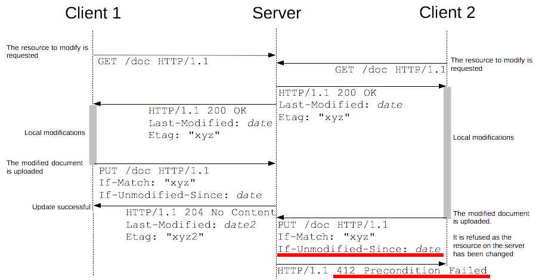</p> --- class: center middle ## RESTful APIs from JS clients .breadcrumbs[<a href="#1">REST Introduction & HTTP</a>] How to use RESTful APIs from JavaScript clients? --- ### Constructing a request .breadcrumbs[<a href="#1">REST Introduction & HTTP</a> > <a href="#43">RESTful APIs from JS clients</a>] The `fetch` function offers a simple way to build HTTP requests from JavaScript: ```javascript const responsePromise = fetch('/api/movies', { /* Specify the HTTP method */ method: 'POST', headers: { /* Specify all desired headers */ 'Content-Type': 'application/json' }, /* Provide a body, here JSON */ body: JSON.stringify({ name: 'The Matrix', releaseYear: 1999 }) }); ``` --- ### Handling the response .breadcrumbs[<a href="#1">REST Introduction & HTTP</a> > <a href="#43">RESTful APIs from JS clients</a>] The `fetch` function returns a `Promise` that resolves to a `Response` object: ```javascript responsePromise.then(response => { // Get the status code console.log(response.status); // e.g. 200, 201, 404, etc. // Get the response headers const type = response.headers.get('Content-Type'); // application/json // Get the response body by calling the appropriate method. // These methods return a Promise that resolves to the body. if (type.includes('application/json')) { return response.json(); } else if (type.includes('text/html')) { return response.text(); } else { return Promise.reject(new Error('Unsupported content type')); } }).then(data => { // Do something with the response body console.log(data); }).catch(error => { // Handle any error that occurred during the request console.error(error); }); ``` --- ### Client-side state .breadcrumbs[<a href="#1">REST Introduction & HTTP</a> > <a href="#43">RESTful APIs from JS clients</a>] Sometimes, the client needs to store some state between requests. - If that state is **temporary**, it can be stored in a JS variable. It will then be lost when the page is refreshed. - If it should persist between refreshes, it can be stored in a **cookie**, and retrieved from there on page load. ```javascript // Setting a cookie document.cookie = 'name=John Doe; expires=Fri, 31 Dec 9999 23:59:59 GMT'; // Getting a cookie const cookies = document.cookie.split(';'); const name = cookies.find(c => c.startsWith('name=')).split('=')[1]; ``` See [here](https://developer.mozilla.org/en-US/docs/Web/API/Document/cookie) for details on cookies and how to use them. --- ## Resources .breadcrumbs[<a href="#1">REST Introduction & HTTP</a>] **Documentation** * [HTTP request methods][http-methods] ([RFC][http-methods-rfc], [PATCH RFC][patch-rfc]) * [HTTP headers (request/response)][http-headers] * [HTTP status codes][http-status-codes] ([RFC][http-status-codes-rfc]) **Further reading** * [Architectural Styles and the Design of Network-based Software Architectures (Roy Fielding)][roy-fielding-thesis] * [A brief introduction to REST][rest-intro] * [REST Cheat Sheet][rest-cheat-sheet] * [Using HTTP Methods for RESTful Services][http-methods-rest] * [Best Practices for Designing a Pragmatic RESTful API][rest-pragmatic] --- class: center middle ## Going further .breadcrumbs[<a href="#1">REST Introduction & HTTP</a>] You can follow the remaining slides to play around with these operations with a prepared REST API: https://demo.archioweb.ch --- ### [Create, read, update, delete (CRUD)][crud] .breadcrumbs[<a href="#1">REST Introduction & HTTP</a> > <a href="#48">Going further</a>] Since REST deals primarily with **resources**, in a REST API you will (mostly): * **C**reate new resources * **R**ead (or retrieve) a resource or collection of resources * **U**pdate resources * **D**elete (or detroy) resources Let's see how to do that with the API at `https://demo.archioweb.ch`. --- ### Postman .breadcrumbs[<a href="#1">REST Introduction & HTTP</a> > <a href="#48">Going further</a>] To make requests to the API, we will use [Postman][postman], an HTTP client with a GUI. **Download and launch** the application now. You don't have to sign up when it prompts you to, you can skip it: <p class='center'>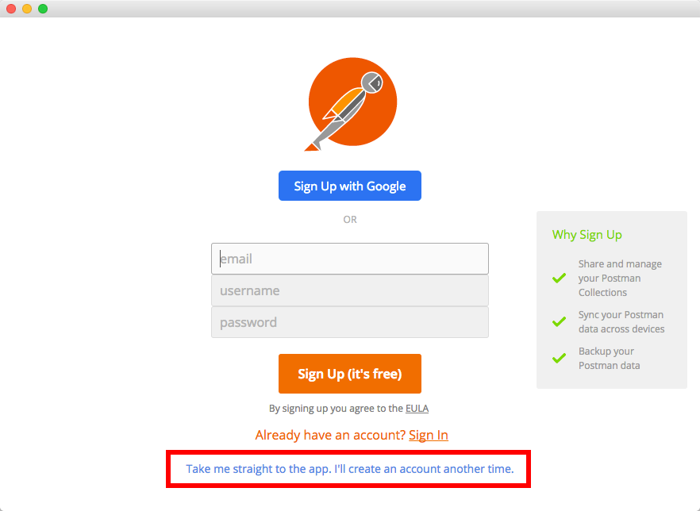</p> --- #### Postman interface .breadcrumbs[<a href="#1">REST Introduction & HTTP</a> > <a href="#48">Going further</a> > <a href="#50">Postman</a>] Postman allows you to make any HTTP **request/response** (e.g. `POST`, `PUT`, custom headers, etc). It also remembers your **previous requests**.. 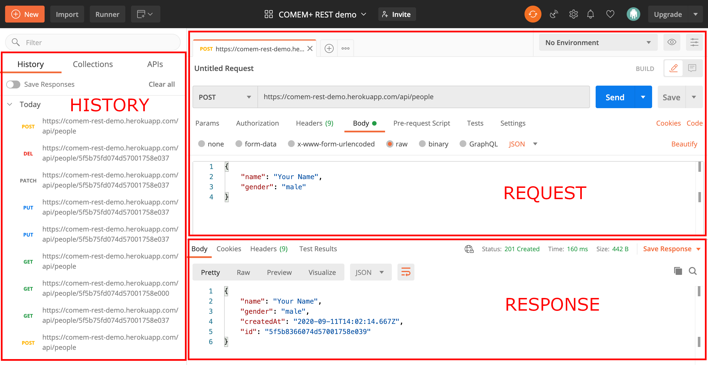 --- #### Make your first request .breadcrumbs[<a href="#1">REST Introduction & HTTP</a> > <a href="#48">Going further</a> > <a href="#50">Postman</a>] 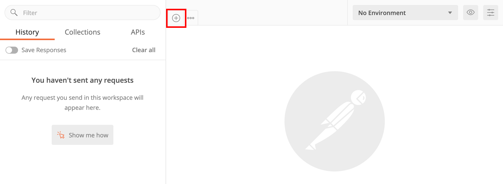 > **Hint:** the next steps will show you have to make various HTTP requests. The > placeholder **"Your Name"** is used in several places. Replace it with your > name to avoid collisions with other people using the API at the same time. --- ### Create .breadcrumbs[<a href="#1">REST Introduction & HTTP</a> > <a href="#48">Going further</a>] The API allows us to **create a person** by making a `POST` request with a **JSON representation** of the person. This is the request we want to make: ```http POST /api/people HTTP/1.1 Host: demo.archioweb.ch Content-type: application/json { "name": "Your Name", "gender": "male" } ``` Let's make that request with Postman: 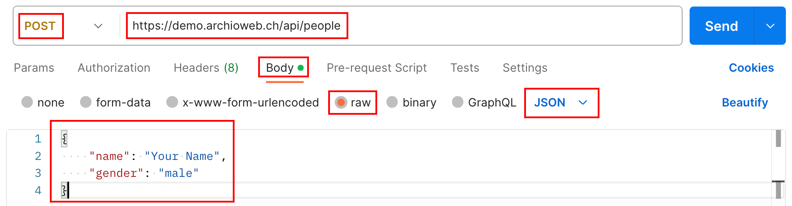 --- #### Create request headers .breadcrumbs[<a href="#1">REST Introduction & HTTP</a> > <a href="#48">Going further</a> > <a href="#53">Create</a>] You can see and modify the request headers in the **Headers** tab: <img src='images/postman-create-headers.png' width='100%' /> Notice that Postman has automatically set the [`Content-Type` header][content-type] to `application/json` when you selected JSON as the body type. Press the **Send** button to send the request. --- #### Create response .breadcrumbs[<a href="#1">REST Introduction & HTTP</a> > <a href="#48">Going further</a> > <a href="#53">Create</a>] You should see the response below the request: 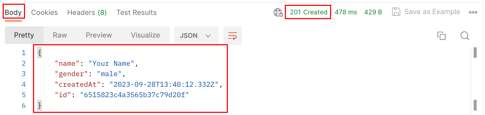 > "The [**POST** method][post] is used to request that the origin server accept > the entity enclosed in the request as a **new subordinate** of the resource > identified by the Request-URI in the Request-Line." > "If a resource has been **created** on the origin server, the response SHOULD > be [`201 Created`][201] and contain an entity which describes the status of > the request and refers to the new resource, and a [`Location` > header][location]." In other words: the server tells us that **a new person has been created** by responding with the status code `201 Created` and the person's data. --- #### Create response headers .breadcrumbs[<a href="#1">REST Introduction & HTTP</a> > <a href="#48">Going further</a> > <a href="#53">Create</a>] You can also see the response headers in the **Headers** tab: 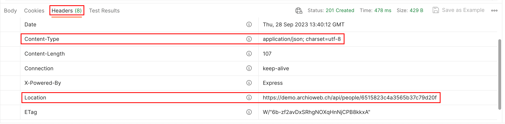 > "If a resource has been **created** [...] the response SHOULD [...] contain a > **Location header**. For 201 Created responses, the Location is that of the > new resource which was created by the request." The server tells us where to find the new resource in the **Location** header. --- ### Read .breadcrumbs[<a href="#1">REST Introduction & HTTP</a> > <a href="#48">Going further</a>] Let's make a request to **read** (or **retrieve**) the person we created. This time we need a simple `GET` request to the path given to us in the **Location** header of the previous response: ```http GET /api/people/5f5...037 HTTP/1.1 Host: demo.archioweb.ch ``` Configure that request in Postman: 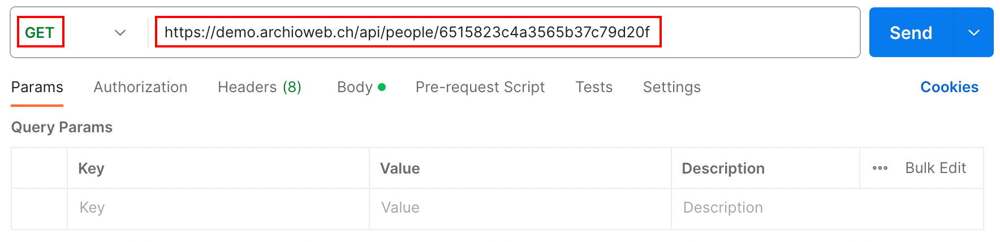 --- #### Read response .breadcrumbs[<a href="#1">REST Introduction & HTTP</a> > <a href="#48">Going further</a> > <a href="#57">Read</a>] Press **Send** and you should retrieve the person in the response: 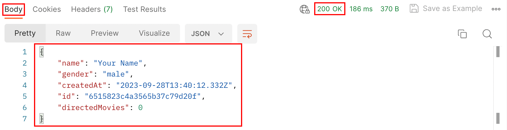 > "The [**GET** method][get] means retrieve whatever information (in the form of > an entity) is identified by the Request-URI." Basically, the server is sending us the **JSON representation** of the `/api/people/5f5...037` resource. The [`200 OK`][200] status code indicates that the request was **successful**. --- #### Read a resource that does not exist .breadcrumbs[<a href="#1">REST Introduction & HTTP</a> > <a href="#48">Going further</a> > <a href="#57">Read</a>] Configure the same request but change the last few characters of the URL path so that the person identifier is invalid: 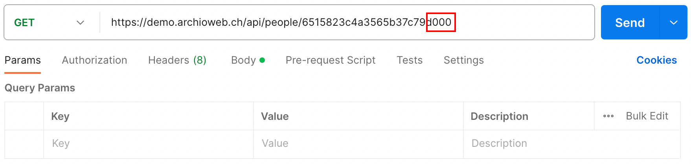 Press **Send** and you will see that the server responds with an error message: 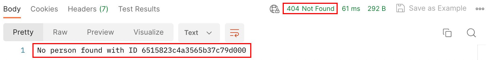 By sending a response with the [`404 Not Found`][404] status code, the server tells us that **no resource exists at that URL**. --- #### Read a collection .breadcrumbs[<a href="#1">REST Introduction & HTTP</a> > <a href="#48">Going further</a> > <a href="#57">Read</a>] The API also has a resource that represents the **collection of people** that have been created. Let's make a `GET` request to **read** that. We simply have to remove the person's ID from the URL path: ```http GET /api/people HTTP/1.1 Host: demo.archioweb.ch ``` Configure that request in Postman: 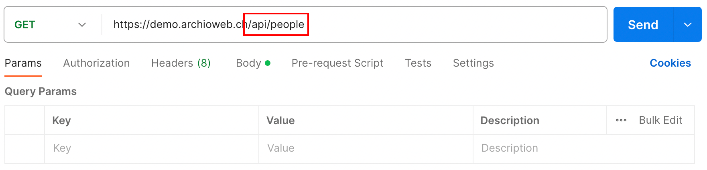 --- #### Read collection response .breadcrumbs[<a href="#1">REST Introduction & HTTP</a> > <a href="#48">Going further</a> > <a href="#57">Read</a>] Press **Send** and you should receive a response with several people in it: 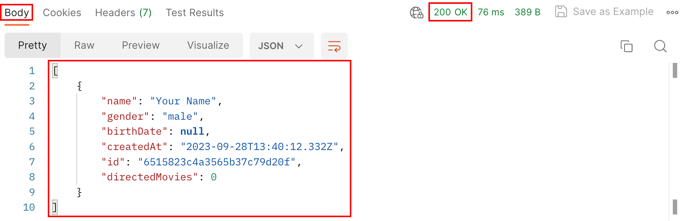 Again, the server is sending us the **JSON representation** of the `/api/people` resource. Since that represents multiple people, we receive a **JSON array**, where each element is a **JSON object** representing a person. --- ### Update .breadcrumbs[<a href="#1">REST Introduction & HTTP</a> > <a href="#48">Going further</a>] The API also allows us to **update** a person by making a `PUT` request to the person's resource with a **JSON representation** of the updated person. Let's make a request to add your birthdate: ```http PUT /api/people/5f5...037 HTTP/1.1 Host: demo.archioweb.ch Content-type: application/json { "name": "Your Name", "gender": "female", "birthDate": "2000-01-01" } ``` Configure that request with Postman: 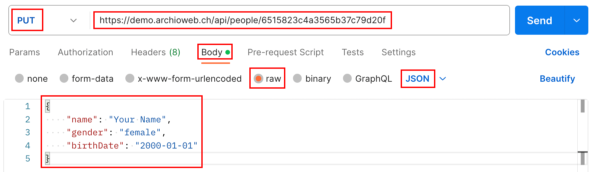 --- #### Update response .breadcrumbs[<a href="#1">REST Introduction & HTTP</a> > <a href="#48">Going further</a> > <a href="#62">Update</a>] Press **Send** and you should receive the updated person in the response: 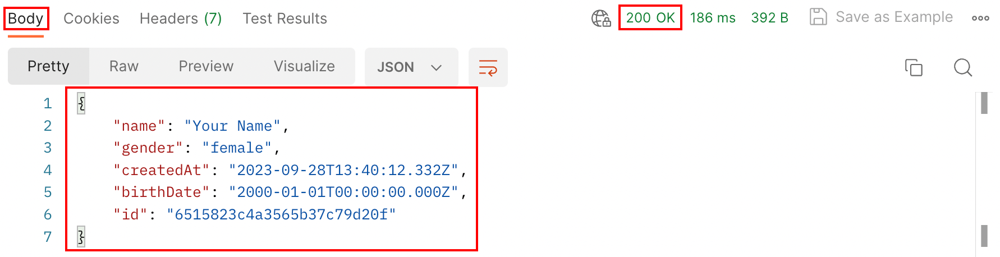 > "The [**PUT** method][put] requests that the enclosed **entity** be stored > under the supplied Request-URI. If the Request-URI refers to an **already > existing resource**, the enclosed entity SHOULD be considered as a **modified > version** of the one residing on the origin server." > "If an existing resource is modified, either the [`200 OK`][200] or [`204 No > Content`][204] response codes SHOULD be sent to indicate successful completion > of the request." Basically, we **replaced** the person's data with the representation we sent. Since no new resource was created, the server simply responds with `200 OK`. --- #### Partial update with PUT .breadcrumbs[<a href="#1">REST Introduction & HTTP</a> > <a href="#48">Going further</a> > <a href="#62">Update</a>] Now, configure the same request but **without the gender**, and press **Send**: --- #### Partial update response with PUT .breadcrumbs[<a href="#1">REST Introduction & HTTP</a> > <a href="#48">Going further</a> > <a href="#62">Update</a>] The server is responding with the status code [`422 Unprocessable Entity`][422] and telling you that the person representation you sent is invalid because it is missing the gender property: <p class="center"> 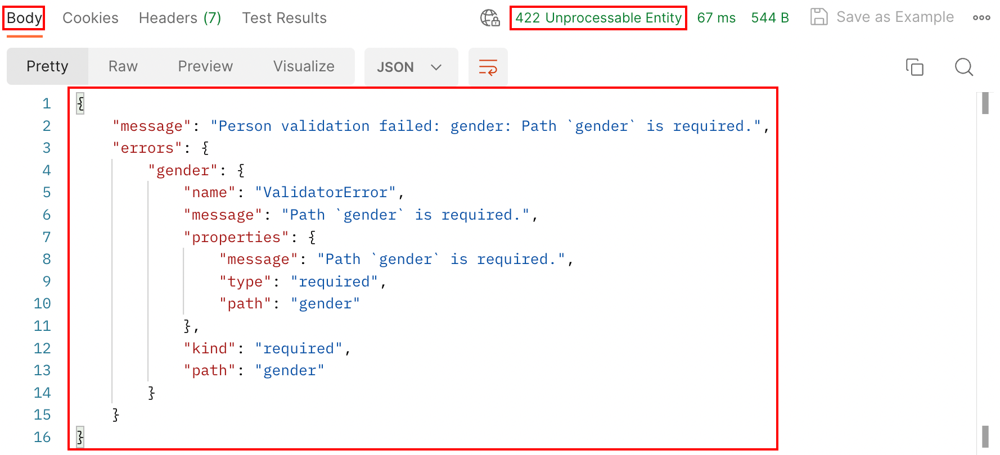 </p> According to the HTTP specification, the `PUT` method is used to store the **entire representation** you are sending as the **new state of the resource**, which it cannot do in this case because it is **invalid**. API operations using **`PUT` should not support partial updates**. --- #### Partial updates with PATCH .breadcrumbs[<a href="#1">REST Introduction & HTTP</a> > <a href="#48">Going further</a> > <a href="#62">Update</a>] The `PATCH` method was later added to the HTTP specification to support **partial updates**. The API also supports it, so let's make a PATCH request to update your birthdate: ```http PATCH /api/people/5f5...037 HTTP/1.1 Host: demo.archioweb.ch Content-type: application/json { "birthDate": "2001-02-03" } ``` Configure that request with Postman: 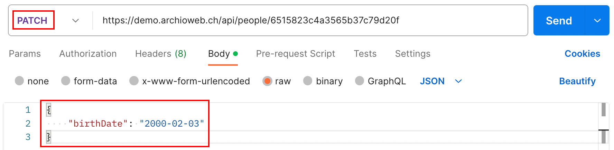 --- #### Partial update response with PATCH .breadcrumbs[<a href="#1">REST Introduction & HTTP</a> > <a href="#48">Going further</a> > <a href="#62">Update</a>] This time the request was accepted: 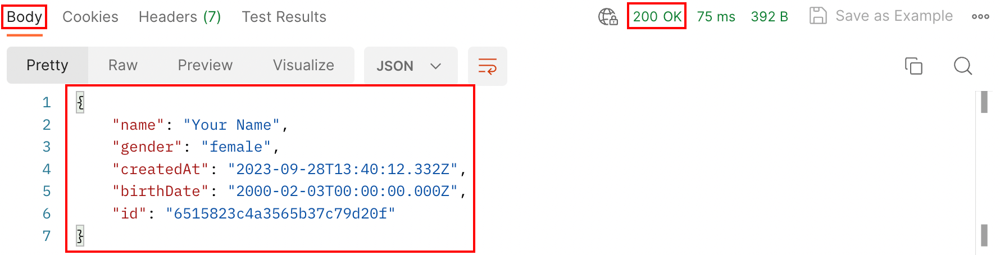 > "The [`PATCH` method][patch] requests that a **set of changes** described in > the request entity be **applied to the resource** identified by the > Request-URI." Instead of a replacement of the entire resource, our JSON representation is interpreted as a **partial update** to the resource, in this case an update of the `birthDate` property. Like with `PUT`, no new resource was created, so the server responds with [`200 OK`][200]. --- ### Delete .breadcrumbs[<a href="#1">REST Introduction & HTTP</a> > <a href="#48">Going further</a>] Finally, let's **delete** the person. We simply need to make a `DELETE` request with no request body: ```http DELETE /api/people/5f5...037 HTTP/1.1 Host: demo.archioweb.ch ``` Configure that request with Postman: 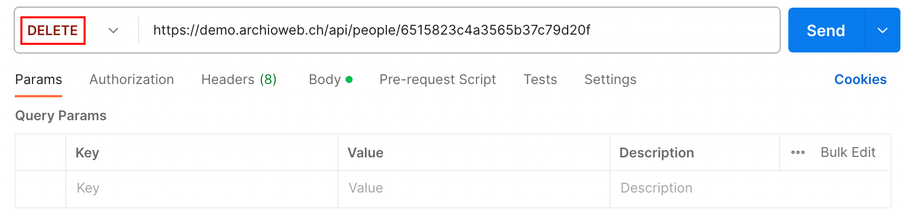 --- #### Delete response .breadcrumbs[<a href="#1">REST Introduction & HTTP</a> > <a href="#48">Going further</a> > <a href="#68">Delete</a>] Press **Send** and you should get a response from the server with no response body: 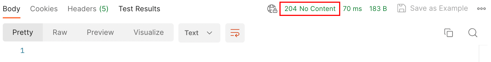 > "The [`DELETE` method][delete] requests that the origin server **delete the > resource** identified by the Request-URI." > "A successful response SHOULD be [`200 OK`][200] if the response includes an > entity describing the status, [`202 Accepted`][202] if the action has not yet > been enacted, or [**`204 No Content`**][204] if the action has been enacted > but **the response does not include an entity**." The server has **successfully deleted the person resource** and is not sending us any additional data as indicated by the `204 No Content` status code. As you can see in the method's documentation, the server could also respond differently (e.g. `200 OK` with a representation of the deleted resource), but `204 No Content` was chosen for this API implementation. --- class: compact-table ### CRUD summary .breadcrumbs[<a href="#1">REST Introduction & HTTP</a> > <a href="#48">Going further</a>] Collection (`/people` - plural name) | Single resource (`/people/:id` - one person in the collection) :--- | :--- `POST /api/people`<br/>**Create a new resource** in the collection, `201 Created` and `Location` header (and optional response body) | - `GET /api/people`<br/>**Read a list of resources** (with optional pagination, sorting and filtering), `200 OK` | `GET /api/people/:id`<br/>**Read one resource**, `200 OK` *(Batch update)* | `PUT /api/people/:id`<br/>**Fully update one resource**, `200 OK` (with body) or `204 No Content` (without body) *(Batch partial update)* | `PATCH /api/people/:id`<br/>**Partially update one resource**, `200 OK` (with body) or `204 No Content` (without body) *(Batch delete)* | `DELETE /api/people/:id`<br/>**Delete one resource**, `200 OK` (with body) or `204 No Content` (without body) --- class: compact-table #### CRUD errors summary .breadcrumbs[<a href="#1">REST Introduction & HTTP</a> > <a href="#48">Going further</a> > <a href="#70">CRUD summary</a>] Collection errors | Resource errors :--- | :--- `POST /api/people`<br/>`400 Bad Request` (JSON malformed), `404 Not Found`, `422 Unprocessable Entity` (Data semantically invalid) | - `GET /api/people`<br/>`400 Bad Request` (Query parameters invalid) | `GET /api/people/:id`<br/>`404 Not Found` - | `PUT /api/people/:id`<br/>`400 Bad Request` (JSON malformed), `404 Not Found`, `422 Unprocessable Entity` (Data semantically invalid) - | `PATCH /api/people/:id`<br/>`400 Bad Request` (JSON malformed), `404 Not Found`, `422 Unprocessable Entity` (Data semantically invalid) - | `DELETE /api/people/:id`<br/>`404 Not Found`, `409 Conflict` (Cannot be deleted) [200]: https://httpstatuses.com/200 [201]: https://httpstatuses.com/201 [202]: https://httpstatuses.com/202 [204]: https://httpstatuses.com/204 [404]: https://httpstatuses.com/404 [422]: https://httpstatuses.com/422 [api]: https://en.wikipedia.org/wiki/Application_programming_interface [auth0-tokens]: https://auth0.com/blog/ten-things-you-should-know-about-tokens-and-cookies/ [chrome]: https://www.google.com/chrome/ [content-type]: https://www.rfc-editor.org/rfc/rfc9110.html#name-content-type [crud]: https://en.wikipedia.org/wiki/Create,_read,_update_and_delete [delete]: https://www.rfc-editor.org/rfc/rfc9110.html#name-delete [get]: https://www.rfc-editor.org/rfc/rfc9110.html#name-get [hateoas]: https://en.wikipedia.org/wiki/HATEOAS [headers]: https://en.wikipedia.org/wiki/List_of_HTTP_header_fields#Request_fields [http]: https://en.wikipedia.org/wiki/Hypertext_Transfer_Protocol [http10-rfc]: https://tools.ietf.org/html/rfc1945 [http11-rfc]: https://tools.ietf.org/html/rfc2616 [http2]: https://en.wikipedia.org/wiki/HTTP/2 [http2-rfc]: https://tools.ietf.org/html/rfc7540 [http3]: https://en.wikipedia.org/wiki/HTTP/3 [http3-rfc]: https://tools.ietf.org/html/rfc9144 [http-auth]: https://developer.mozilla.org/en-US/docs/Web/HTTP/Authentication [http-conditional-requests]: https://developer.mozilla.org/en-US/docs/Web/HTTP/Conditional_requests [http-content-negotiation]: https://en.wikipedia.org/wiki/Content_negotiation [http-cors]: https://developer.mozilla.org/en-US/docs/Web/HTTP/Access_control_CORS [http-headers]: https://en.wikipedia.org/wiki/List_of_HTTP_header_fields [http-methods]: https://developer.mozilla.org/en-US/docs/Web/HTTP/Methods [http-methods-rfc]: https://www.rfc-editor.org/rfc/rfc9110.html#name-methods [http-methods-rest]: http://www.restapitutorial.com/lessons/httpmethods.html [http-request-headers]: https://en.wikipedia.org/wiki/List_of_HTTP_header_fields#Request_fields [http-response-headers]: https://en.wikipedia.org/wiki/List_of_HTTP_header_fields#Response_fields [http-status-codes]: https://httpstatuses.com [http-status-codes-rfc]: https://www.rfc-editor.org/rfc/rfc9110.html#name-status-codes [http-teapot]: https://tools.ietf.org/html/rfc2324 [hypermedia]: https://en.wikipedia.org/wiki/Hypermedia [location]: https://www.rfc-editor.org/rfc/rfc9110.html#name-location [osi-application]: https://en.wikipedia.org/wiki/Application_layer [patch]: https://tools.ietf.org/html/rfc5789#section-2 [patch-rfc]: https://tools.ietf.org/html/rfc5789 [post]: https://www.rfc-editor.org/rfc/rfc9110.html#name-post [postman]: https://www.postman.com/downloads/ [put]: https://www.rfc-editor.org/rfc/rfc9110.html#name-put [rest]: https://en.wikipedia.org/wiki/Representational_state_transfer [rest-cheat-sheet]: http://51elliot.blogspot.ch/2014/03/rest-api-best-practices-rest-cheat-sheet.html [rest-constraints]: https://en.wikipedia.org/wiki/Representational_state_transfer#Architectural_constraints [rest-intro]: https://www.infoq.com/articles/rest-introduction [rest-pragmatic]: http://www.vinaysahni.com/best-practices-for-a-pragmatic-restful-api [rest-standards]: https://standards.rest [roy-fielding-thesis]: https://www.ics.uci.edu/~fielding/pubs/dissertation/top.htm [tcp]: https://en.wikipedia.org/wiki/Transmission_Control_Protocol [udp]: https://en.wikipedia.org/wiki/User_Datagram_Protocol [url]: https://en.wikipedia.org/wiki/Uniform_Resource_Locator [web-service]: https://en.wikipedia.org/wiki/Web_service